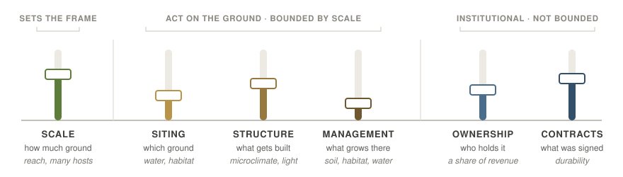

1 Design Levers
A solar project is a long list of decisions, and almost all of them fall into six groups. How much ground to take. Which ground. What gets built on it. What grows there and how the place is run. Who holds the asset. What the parties signed. These are the design levers, and they are the only things anyone can actually change.
Everything else in this document sits downstream of them. The design pressures are the forces arguing over how the levers get set, and the restorative functions are what the settings produce. Two chapters follow this one, and they are not the same kind of thing. Scale gets one because a single lever carries that much structure: five calibration points from the farmstead to the complex. The farming axis gets one because it is not a lever at all. It is what siting, structure, and management jointly produce, five positions recording what happened to the farming on the ground the array took, and it is what most public argument about solar on farmland turns on. The four levers without a chapter are worked through here.

1.1 The levers
| Lever | What it decides | What it can deliver |
|---|---|---|
| Scale | how much ground the project takes · the capacity it is filed at, and the zone that follows · interconnection posture, from behind-the-meter to transmission · whether to build once or phase several arrays | the transect position, and how much of every other lever is left |
| Siting | which ground the array takes, and where on the parcel · whether it stands upslope or downslope of the problem it might fix · how near it is to the fields it might serve · whether a landscape carries a few large arrays or many small ones | water quality, habitat context, service to nearby fields |
| Structure | mounting type and clearance · row spacing and ground coverage · pore space · module technology · grading and site works · the built half of the edge: setback, berm, wall, fence line | microclimate, room to farm, light to the ground layer |
| Management | the ground layer and how it is established · the mowing and grazing calendar · stocking density · tracking and curtailment · construction sequencing and traffic lanes · the planted half of the edge: hedgerow, buffer, screening | soil and carbon, habitat, most of the water balance |
| Ownership | who holds the asset: owner-operator, landowner, developer, utility, cooperative, or shared · co-ownership or an equity stake in place of a rent | a share of generation revenue for the people on the ground |
| Contracts | lease terms and duration · offtake structure · interconnection posture · the community-benefit instruments · easements · the decommissioning bond | the community function, and durability for everything above |
Two things that look like levers are not. What a project is aiming at is a goal rather than a decision about the project, which makes it the restorative goals pressure; what the ordinance requires is not chosen by anybody building, which makes it policy and permission. Both belong in §sec-pressures-ch, and a list that mixes a goal and a constraint in with actual choices is sorting three different kinds of thing under one heading.
Scale comes first because every other lever is bounded by it, and it earns a chapter of its own (§sec-transect). It does no restorative work of its own, since no field is repaired and no flock is fed by a project being 40 acres rather than 400. It is a decision for some parties and a constraint for others: a farmer with one parcel and a distribution line at the road has very little say in it, and a developer assembling acreage near a substation has a great deal. Both are choosing, and only one of them knows it.
How much each of the other five can still deliver once scale has settled is the subject of §sec-modes.
1.2 The ground levers: siting, structure, and management
Siting is the choice of ground and the most powerful of the six where a designer still has it, though it settles a position on the farming axis only jointly, with structure and management (§sec-farming-axis). It is also the first of the six to disappear as scale grows. Placement decides whether a water-quality claim is even available, because the two routes want opposite ground: avoided loading needs the impaired field itself, and interception needs ground between that field and the water (Schulte et al. 2017). It decides whether a pollinator planting reaches anyone, since a forager works a radius of roughly 1.5 km and about 3,500 km² of US farmland sits inside that distance of existing and planned facilities (Walston et al. 2018). And it is cheaper than the argument against it usually assumes: siting New York’s entire 2050 build around biodiversity came to 0.17% above the least-cost case (Gallaher et al. 2026).
Structure is the hardware and its geometry. It owns microclimate outright, because shade, the drop in vapor-pressure deficit, and the shelter of nighttime minima are products of geometry rather than of anything growing, and those land in the water, ecology, and agricultural functions rather than in one of their own (§sec-functions). Row spacing is not quite a structural decision on its own, since crops differ in how much shade they will trade for relief, so the spacing and the ground layer are one decision taken by two parties (Weselek et al. 2019). Structure also decides how much earth gets moved, which is the least visible choice in the set and one of the most consequential: a racking choice made on cost sets the soil-carbon ledger for thirty years before any seed mix is chosen (§sec-fn-agricultural).
Management is what grows underneath and how the place is run, from the first day of construction to the last year of the lease. It carries soil and carbon, most of habitat, and most of the water balance, and it starts earlier than people expect, because construction sequencing and traffic-lane discipline decide how much of the starting soil survives to be managed at all. It is also the only lever that can still be changed after the project is built, which cuts both ways: a planting that was right in year one can be undone in year four by a contractor doing exactly what the maintenance schedule says (Blaydes et al. 2022).
The edge is split between structure and management on purpose. A berm, a wall, and a fence line are built; a hedgerow is planted and kept. The halves fail differently, because the berm stands in year twenty whether or not anyone tended it and the hedgerow does not, so a project that promises screening and delivers it entirely in plantings has promised something with a maintenance bill attached.
Scale limits these three against each other rather than uniformly. As a project grows, siting narrows and management widens, and they trade places at A3 (§sec-siting-latitude).
1.3 The institutional levers: ownership and contracts
Ownership is who holds the asset, and it settles both who has standing to decide the rest and who captures what the array earns. An owner-operator, a cooperative, and a utility do not want the same things, and the differences show up in the ground layer rather than only in the accounts. Barnyard shelter solar is the clean case at the small end: it is restorative because the person who owns the array is the person who owns the animals under it, and no agreement was needed to align them.
Ownership is also the lever the transect moves furthest, and it moves in one direction. At the farmstead the array belongs to the operator. Through the commercial and community zones it belongs to the landowner, or to a community-solar structure with many small holders. At A4 and A5 it belongs to developer capital and then to a utility or an independent power producer, and the person on the ground holds a lease instead.
The generation revenue moves with it, and that is the largest thing an agrisolar project creates. A lease pays for the use of ground and is not a share of what the array sells, so a landowner earning three to four times what the crop returned per acre (Sturchio et al. 2025) is still being paid for land rather than for electricity. Restorativity has an ownership question inside it, and the size of the lease payment does not answer it.
That is what makes co-ownership, a community-solar subscription, and an equity stake in place of a rent restorative instruments rather than goodwill: each keeps some part of the generation revenue with the people who host the thing. Ownership produces no restorative function of its own, and instead decides who captures the ones the other levers produce, which is why the community and economic function is most at risk on absentee projects and most fully realized under local or shared ownership.
Contracts are what the parties actually signed. This lever carries the community and economic function almost by itself, and it is also what makes the other five last. The clearest published case runs through the institutional side alone: solar lease income can make a conservation practice affordable that federal biofuel policy had made unaffordable (Sturchio et al. 2025). No ground was chosen and no hardware was changed. The restoration happened in a contract, which is the lever most often left on the table.
Durability is the reason, and it follows from the levers being fixed at very different moments. Scale and siting are settled once. Structure is fixed on the day the project is built. Ownership turns over in decades and contracts in years, while management is continuous and can be changed next season. Brand (1994), after Frank Duffy, reads a building as several layers of differing longevity rather than as one object, and holds that a design works when the fast layers can move without tearing the slow ones; Habraken (2002) adds that each layer has a decision-maker of its own. Management is the fast layer here and therefore the fragile one. It survives only as long as somebody is paying for it and somebody else is checking, and both of those are contract questions: a seed mix is a management decision, and whether it survives to year twenty is a lease question.
Designed landscapes fail this way as a matter of course. The Landscape Architecture Foundation reports that parts of many projects fail within a year or two of installation because maintenance staff had no voice during design and the designer’s scope ended at the final walkthrough (Douglas and Deming 2015). A project can be sited perfectly, built correctly, and planted well, and still be gravel in fifteen years, because the levers that would have held it there were treated as paperwork rather than as design.
Which of the six is made to carry the restorative work is the project’s restoration mode, and it is enough of a decision to have a chapter of its own (§sec-modes).
1 Design Levers – The Lexicon of Restorative Agrisolar Design
1 Design Levers – The Lexicon of Restorative Agrisolar Design
1 Design Levers – The Lexicon of Restorative Agrisolar Design
The Lexicon of Restorative Agrisolar Design